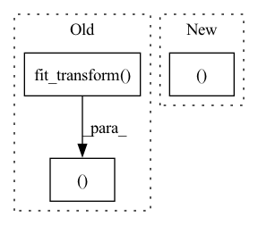

Pattern ID :8908

Before Change
def preprocess_data(train, test):
vectorizer = TfidfVectorizer(stop_words="english")
x_train = vectorizer.fit_transform(train.data)
x_test = vectorizer.transform(test.data)
return SklearnDataset(x_train, train.target), SklearnDataset(x_test, test.target)
After Change
ds_train = SklearnDataset.from_arrays(train.data, train.target, vectorizer, train=True)
ds_test = SklearnDataset.from_arrays(test.data, test.target, vectorizer, train=False)
return ds_train, ds_test
In pattern: SUPERPATTERN
Frequency: 3
Non-data size: 3
Instances
Fragment ID: 32716031
Project Name: webis-de/small-text
Commit Name: 2616e04218056c2450095c749ea2a7a6c3b85488
Time: 2022-09-03
Author: chschroeder@users.noreply.github.com
File Name: examples/examplecode/data/example_data_binary.py
M Class Name: AnonimousClass
N Class Name: AnonimousClass
M Method Name: preprocess_data(2)
N Method Name: preprocess_data(2)
M Parent Class:
N Parent Class:
M File Name: examples/examplecode/data/example_data_binary.py
N File Name: examples/examplecode/data/example_data_binary.py
M Start Line: 12
M End Line: 17
N Start Line: 12
N End Line: 17
'>
Before Change
vectorizer = TfidfVectorizer(stop_words="english")
x_train = normalize(vectorizer.fit_transform(train["text"]))
x_test = normalize(vectorizer.transform(test["text"]))
y_train = list_to_csr(train["labels"], shape=(len(train), NUM_LABELS))
y_test = list_to_csr(test["labels"], shape=(len(test), NUM_LABELS))
return SklearnDataset(x_train, y_train), SklearnDataset(x_test, y_test)
After Change
ds_train = SklearnDataset.from_arrays(train["text"], y_train, vectorizer, train=True)
ds_test = SklearnDataset.from_arrays(test["text"], y_test, vectorizer, train=False)
return ds_train, ds_test
'>
Fragment ID: 32716030
Project Name: webis-de/small-text
Commit Name: 2616e04218056c2450095c749ea2a7a6c3b85488
Time: 2022-09-03
Author: chschroeder@users.noreply.github.com
File Name: examples/examplecode/data/example_data_multilabel.py
M Class Name: AnonimousClass
N Class Name: AnonimousClass
M Method Name: preprocess_data_sklearn(2)
N Method Name: preprocess_data_sklearn(2)
M Parent Class:
N Parent Class:
M File Name: examples/examplecode/data/example_data_multilabel.py
N File Name: examples/examplecode/data/example_data_multilabel.py
M Start Line: 19
M End Line: 27
N Start Line: 18
N End Line: 26
'>
Before Change
mean_valid_loss = np.mean(valid_losses)
valid_true_outputs = MultiLabelBinarizer().fit_transform(valid_true_outputs)
valid_pred_outputs = MultiLabelBinarizer().fit_transform(valid_pred_outputs)
valid_accuracy = metrics.accuracy_score(valid_true_outputs, valid_pred_outputs)
return mean_valid_loss, valid_accuracy
def test(self, model_name):
After Change
mean_valid_loss = np.mean(valid_losses)
mean_valid_accuracy = np.mean(valid_accuracies)
return mean_valid_loss, mean_valid_accuracy
def test(self, model_name):
'>
Fragment ID: 32716029
Project Name: devjwsong/transformer-translator-pytorch
Commit Name: 4097d9eb8241bdf6773e3d9ab62051c7f4ac851c
Time: 2020-04-30
Author: enflwodn@gmail.com
File Name: src/main.py
M Class Name: Manager
N Class Name: Manager
M Method Name: validation(1)
N Method Name: validation(1)
M Parent Class:
N Parent Class:
M File Name: src/main.py
N File Name: src/main.py
M Start Line: 122
M End Line: 153
N Start Line: 119
N End Line: 146